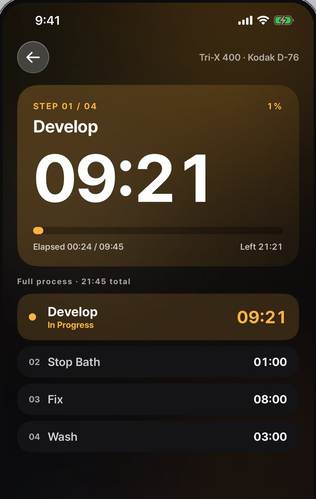
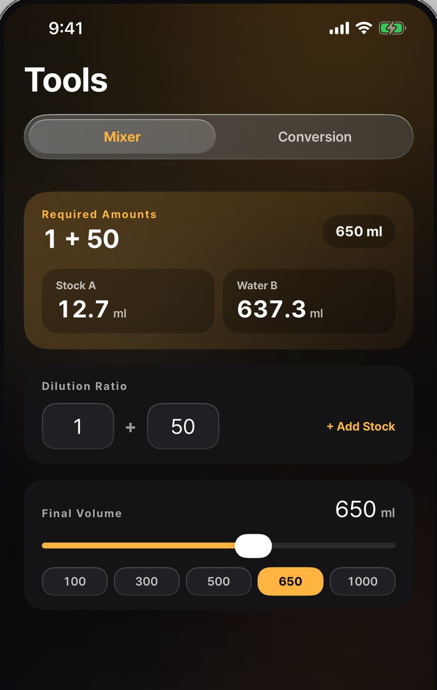
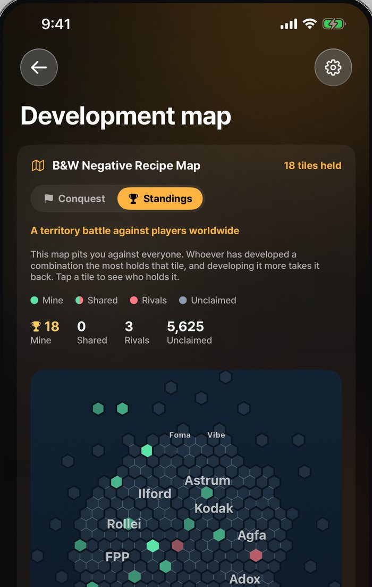

Follow a recipe that already worked.
Or write your own. Either way the timer runs it, step by step.



Someone has already developed this combination.
Choose the film and the developer you have. The app lists the recipes people use for that pair, each carrying its dilution, ISO, temperature, and the time for 135, 120 and 4x5. Open one and you can see how the rolls before yours turned out.
When you find a combination nobody has written down, write it down. Your recipe joins the list, with the results you got.
Then just follow the timer. Load a recipe and it runs the whole sequence, moving between develop, stop, fix and wash on its own and telling you when each step ends. Nothing to reset between steps, nothing to remember.
The numbers are done for you
A recipe gives a ratio, not a volume. 1+50 at 650ml is 12.7ml of stock and 637.3ml of water. The mixer converts any ratio and target volume, and handles recipes written in fluid ounces, so what you pour matches what the recipe says.

Every roll you develop takes a piece of the map.
There are thousands of film and developer combinations and almost nobody has tried more than a handful. Each one is a tile. Develop it and it is yours, until someone develops it more than you have. Most of the map is still unclaimed.
A record of where you have been
The map is built from your development log, so it fills in by itself as you work. It is also the fastest way to see which combinations nobody has written down yet, which are the ones worth trying next.

Answers
Three things that come up constantly in home development, written out properly. None of them need the app.
Before you download it
Is it free?
Yes, supported by advertising. Recipes, the timer and the calculator work without an account. An account is only needed to publish your own recipes, keep a log, or take part in the development map.
Where do the times come from?
From published manufacturer data and from times shared by film photographers. They are a starting point rather than a guarantee. Agitation, water and how used the developer is all move the result, which is why recipes carry the results people actually got.